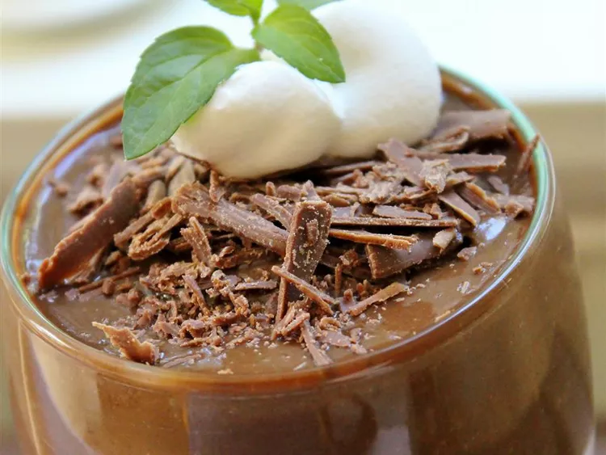

ABC Pudding - Avocado, Banana, Chocolate Delight

The avocado is what makes this raw vegan pudding deliciously thick and creamy - It's taste is unnoticeable.
Ingredients
- 1 ripe avocado, peeled and pitted
- 4 very ripe bananas
- ¼ cup unsweetened cocoa powder, plus more for garnish
Steps
- Place avocados, bananas, and cocoa powder in a blender; puree until smooth.
- Pour pudding into serving bowls and sprinkle additional cocoa powder on top for garnish.
- Chill in refrigerator for texture and flavor to develop, at least 1 hour.